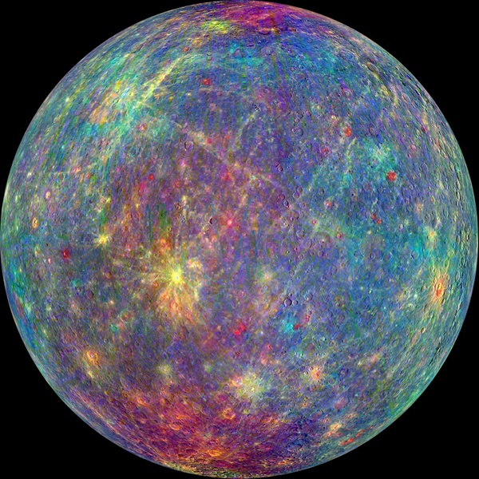
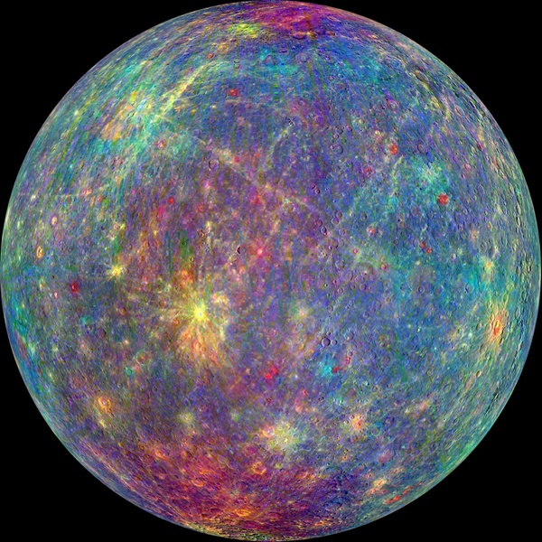
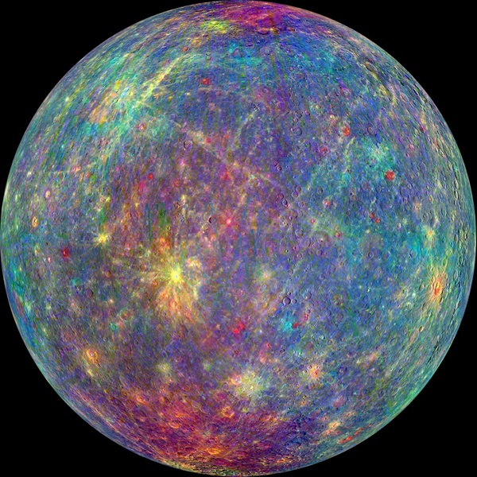

| Neptune | Earth | Mercury | Mars | |
|---|---|---|---|---|
| Mass (kg) | 1.02 x 10 26 | 5.98 x 10 24 | 3.3 x 10 23 | 6.42 x 10 23 |
| Diameter (km) | 49,528 | 12,756 | 4,879.4 | 6,787 |
| Mean Density (kg/m3) | 1,640 | 5,520 | 5,420 | 3,940 |
| Escape Velocity (m/s) | 23,300 | 11,200 | 4,300 | 5,000 |
| Average Distance from Sun | 30.07 AU (4,498,252,900 km) | 1 AU (149,597,890 km) | 0.387 AU (57,909,175 km) | 1.524 AU (227,936,640 km) |
| Rotation Period (length of day in Earth days) | 0.67 (19.1 hours) | 1 (23.93 hours) | 58.65 | 1.026 |
| Revolution Period (length of day in Earth days) | 60,190 (164.8 Earth years) | 365.26 | 87.97 | 686.98 |
Created by: Kinza Haque